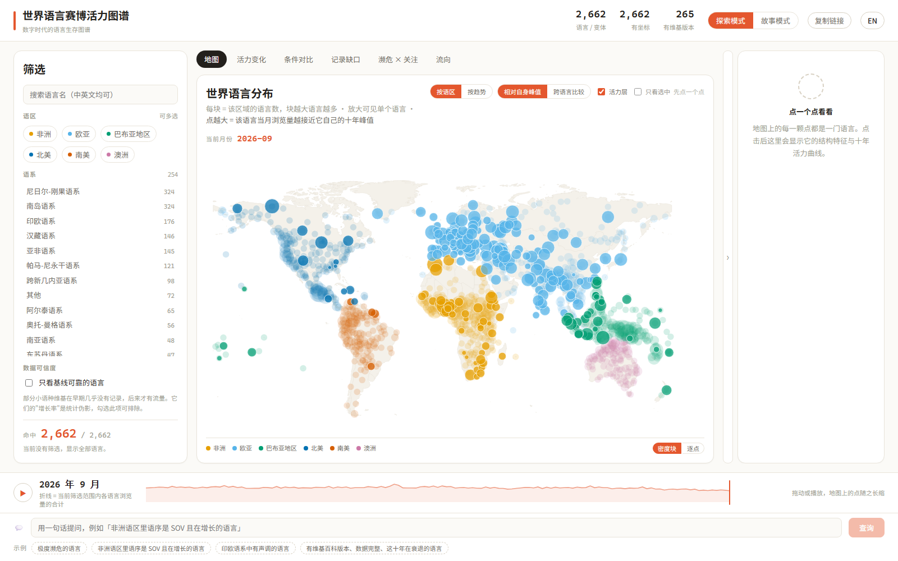
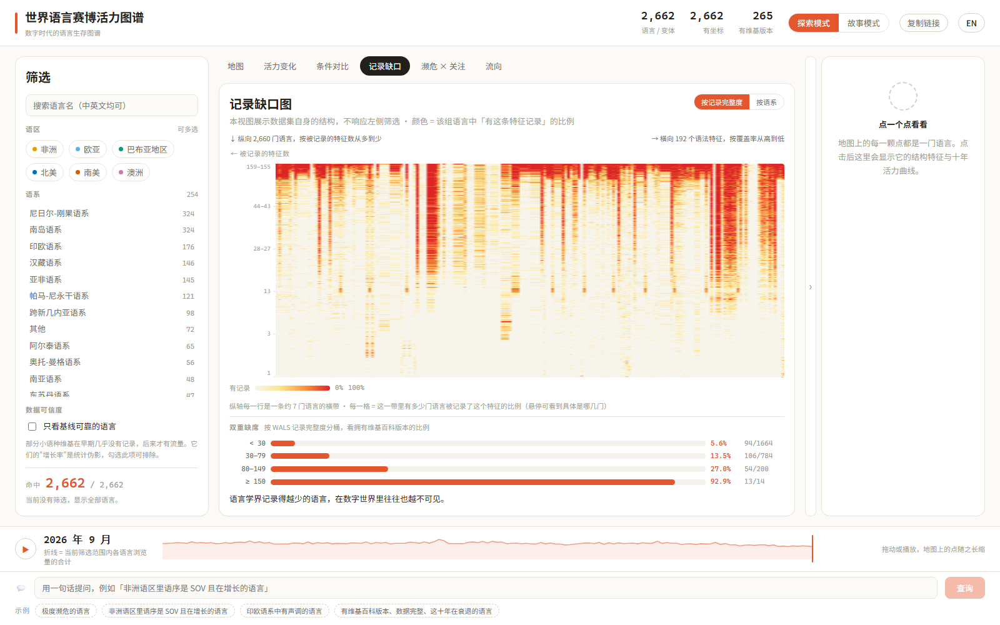
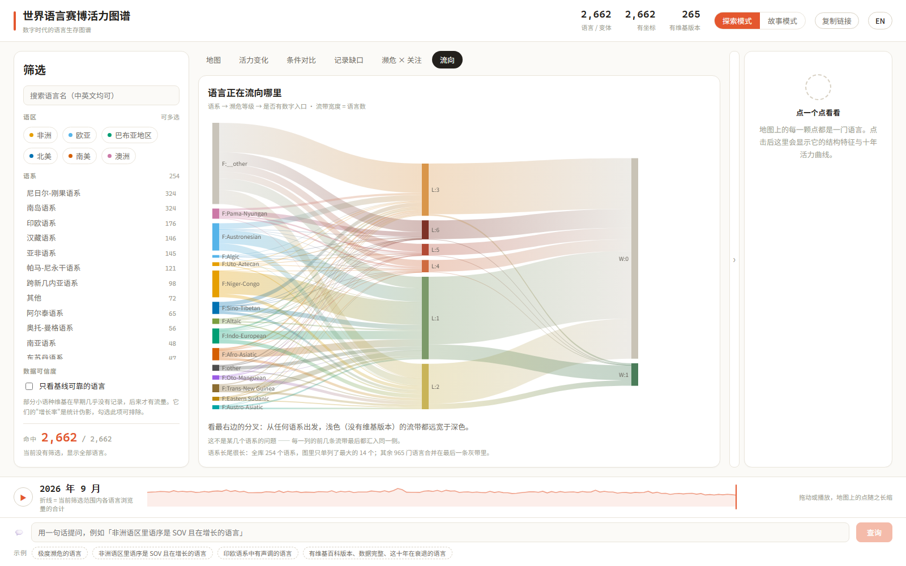

世界语言赛博活力图谱 · 系统架构
四层只通过同一份数据契约耦合：新增一个视图不需要修改任何已有模块
数据来源
sources
WALS CLDF
76,475
2,662 变体 × 192 特征
Wikimedia REST
65,161
135 个月的浏览量
Glottolog CLDF
27,291
危急性 / 描写深度 / 文献
Wikidata SPARQL
ISO 对齐
P1999 · P279 · 639-1↔639-3
Wikimedia 站点表
374
各语言维基版本
↓
↓
↓
↓
↓
处理
pipeline
7 个幂等脚本 · 实体对齐 · SQLite 9 张表 / 157,736 行
重跑结果一致 —— 可复现是这份数据能被检验的前提
一门语言，三套编号：
WALS 码
Glottocode
ISO 639-3
冲突逐条人工核对
↓
应用
application
一份 JSON 契约 → Vue 3 + Pinia 单一状态仓库
地图
活力变化
条件对比
记录缺口
濒危 × 关注
流向
6 个视图
复合字形
语言体检单
大模型问答
3 个进阶功能
↓
交互
interaction
联动筛选
任一处改动全局同步
指向即解释
悬停给出统计口径
故事模式
8 步线性叙事
URL / 自然语言
画面即链接
视图示例（缩略）

地图

记录缺口

流向